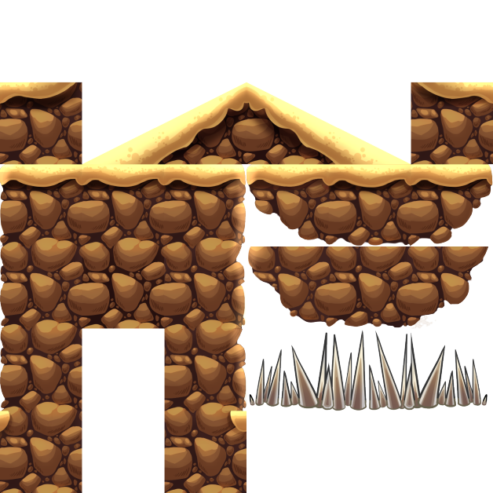

Tools
One of the most exciting aspects of this project was creating the serialization system of the engine.
This system allowed us to use Tiled, an open-source 2D level editor, to design and build our own levels.
Our art team provided us with a variety of tilesets, each containing different elements such as hazards, platforms, or background props.
The level designer could then mix and match these tilesets to craft a unique and engaging level.
After finishing the design, the level would be exported as a JSON file to a folder that the custom engine could access.
I used the rapidJSON library to parse this file and extract the information necessary such as object scales, and position, and to recreate
the entire level in the engine.
Figure 1-3: Level in editor on left, the same level fully serialized
in the game itself and the tileset used to make the level in the editor.

Physics
One of the most challenging and rewarding aspects of my work was developing the physics and collision system for our game.
I inherited a legacy codebase from the previous physics programmer, who left the team midway through the project.
I had to refactor and extend the system to meet the evolving needs of our game design.
Our game featured a dynamic and diverse environment, with different types of terrain tiles such as ramps.
These tiles could be rotated and placed in any orientation, creating complex and interesting scenarios.
However, the existing collision system was very basic and only supported box-box and circle-box collision.
This was not enough to handle the variety and richness of our game world.
To solve this problem, I implemented the Separated Axis Theorem, a powerful algorithm that can detect collisions between any convex polygons.
This allowed me to support any shape and size of terrain tiles, as well as other objects in the game.
The Separated Axis Theorem works by projecting the polygons onto different axes and checking for overlaps.
If there is no overlap on any axis, then there is no collision.
The Separated Axis Theorem can be applied to any number of axes,
as long as they are perpendicular to the edges of the polygons. This way, I was able to handle collisions between any convex polygons in our game.
Code Snippet 1:
Below is an excerpt from my implementation of SAT collision for a
polygon to polygon check.
bool PolyPolyCollisionCheck(Collider* collider1, Collider* collider2)
{
// well have some sort of first pass that will not be
// too costly computationally
// vertices of both of the colliders
std::vector collider1Verts;
std::vector collider2Verts;
if (collider1->GetColliderType() == ColliderType::T_ColliderBox)
{
RectangleCollider* ret = dynamic_cast(collider1);
collider1Verts.resize(4);
collider1Verts = ret->getVertices();
}
if (collider2->GetColliderType() == ColliderType::T_ColliderBox)
{
RectangleCollider* ret = dynamic_cast(collider2);
collider2Verts.resize(4);
collider2Verts = ret->getVertices();
}
// check collider1 and 2 vertices
// against all edge normals of collider1
// and collider2
glm::vec3 edgeNormal = { 0.0f, 0.0f, 0.0f };
for (int i = 0, j = 1; i < collider1Verts.size(); ++i, ++j)
{
// we have a box so don't do the other two edges
// its a waste of time
if (collider1Verts.size() == 4)
{
if (i == 2)
break;
}
// don't want any subscript out of range exceptions
if (j == collider1Verts.size())
j = 0;
// finding the edge normals
edgeNormal.y = collider1Verts[j].x - collider1Verts[i].x;
edgeNormal.x = -(collider1Verts[j].y - collider1Verts[i].y);
// if it does not overlap on one axis we know the two polys
// can't be colliding
if (!CollidesOnAxis(edgeNormal, collider1Verts, collider2Verts))
return false;
}
// Now check for no overlaps on the edge normals of collider2
for (int i = 0, j = 1; i < collider2Verts.size(); ++i, ++j)
{
// we have a box so don't do the other two edges
// its a was of time
if (collider2Verts.size() == 4)
{
if (i == 2)
break;
}
// don't want any subscript out of range exceptions
if (j == collider1Verts.size())
j = 0;
// finding the edge normal
edgeNormal.y = collider2Verts[j].x - collider2Verts[i].x;
edgeNormal.x = -(collider2Verts[j].y - collider2Verts[i].y);
// if it does not overlap on one axis we know the two polys
// can't be colliding
if (!CollidesOnAxis(edgeNormal, collider1Verts, collider2Verts))
return false;
}
// if we get to here without returning
// we know that the two colliders are overlapping
return true;
}
Code Snippet 2:
A small excerpt from my implementation of how I handle resolution with the theorem.
void SATResolution(Object* obj1, Object* obj2, MTV& mtv)
{
// getting very important information up here
Transform* trans2 = obj2->Has(Transform);
Physics* phy2 = obj2->Has(Physics);
CircleCollider* circle = dynamic_cast(obj2->Has(Collider));
Physics* phyCircle = obj2->Has(Physics);
TriangleCollider* col1 =
dynamic_cast(obj1->Has(Collider));
std::vector verts = col1->getVertices();
glm::vec3 circlePos = trans2->GetTranslation();
// check to see if the circle is on two planes at the
// same time if so perform a circle-circle check -> circle resolution and
// return for the rest of the time do line resolution.
glm::vec3 plane1(0.0f);
std::vector planes;
bool InPlanes = false;
{
// else we don't collide with any planes
// so just do line resolution
glm::vec3 edge;
edge.x = -(mtv.axis.y);
edge.y = mtv.axis.x;
edge.z = 0.0f;
glm::vec3 oldVel = phyCircle->GetVelocity();
glm::vec3 newVel = Projection2D(oldVel, edge);
phyCircle->SetVelocity(newVel);
trans2->SetTranslation(circlePos - (mtv.axis * (mtv.S)));
// hacky crap right here allows the player to jump when on ramps
// this stops the landing spam noise when on the ramp
// check the side if it has not been set already
if (!circle->CheckSide(Sides::BOTTOM))
circle->SetSide(Sides::BOTTOM);
// this stops the jump spam nosie when jumping going up a ramp
// this bool is checked in the behavior player if it is set do not
// play the jump sound under any circumstance
BehaviorPlayer* player =
dynamic_cast(circle->GetParent()->Has(Behavior));
if ((newVel.x < 0.0f && newVel.y > 0.0f) ||
(newVel.x > 0.0f && newVel.y > 0.0f))
{
player->goingUpRamp = true;
return;
}
player->goingUpRamp = false;
return;
}
}